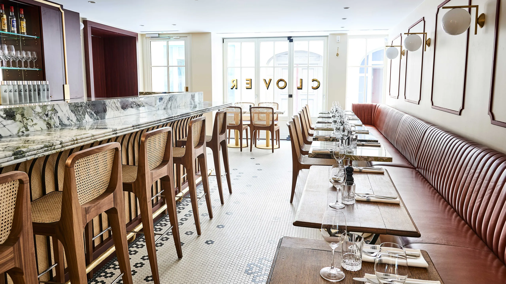
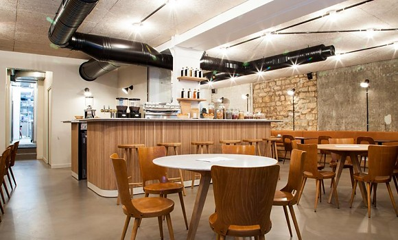
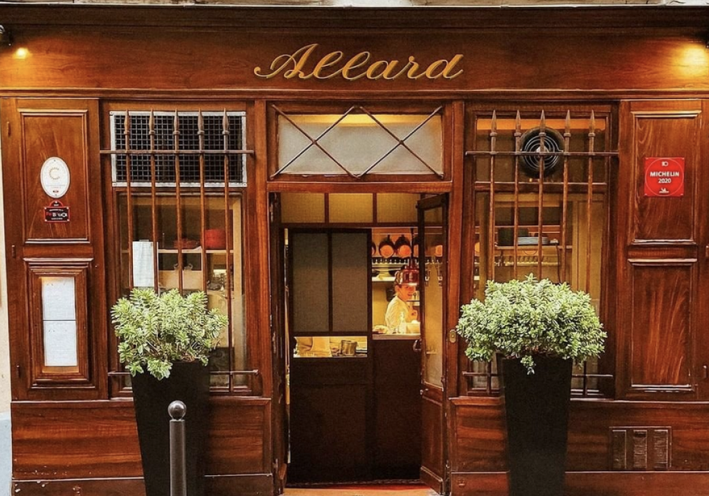
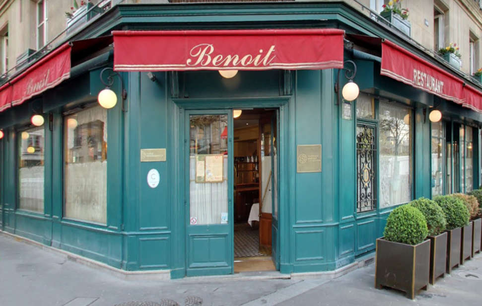
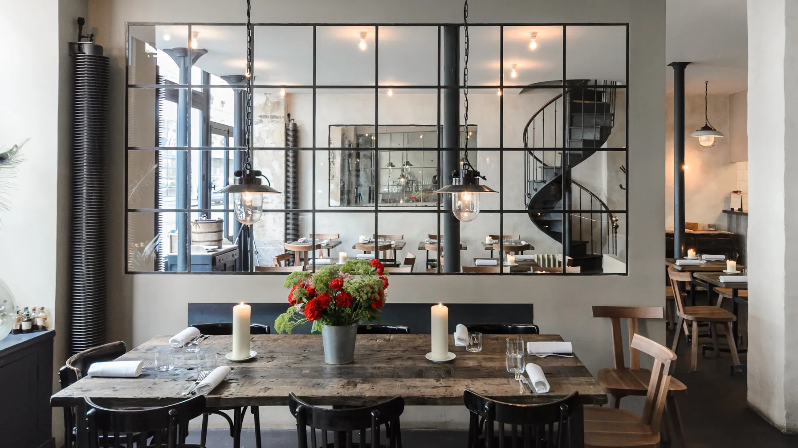

Substance
Substance is a contemporary gastronomy restaurant located in the heart of the 16th arrondissement of Paris.
Clover Grill
From the starters to the desserts, everything is cooked over coals or roasted on a spit, giving the dining experience its own particular flavour. A great success.
La Tour d'Argent
Located just across the Seine River from Notre Dame, this storied restaurant is a must for any visitor, as there are a number of elements that make the place truly remarkable.
Le 52
Fans of neo - bistros are going to love this place with bare concrete and exposed stone, a concise, tempting menu, good wines and craft beers. Nothing is left to chance, down to the coffee, which is selected and roasted by the owner.



Epicure
At Epicure, our celebrated chef Eric Frechon, who holds four Michelin stars, has created a temple of gastronomy. Throughout the summer, the tables laid in an exquisite garden setting.
Allard
At the first step into the restaurant, the visitor is transported into the world of a genuine bistro. The atmosphere is relaxed, the original decor is jealously preserved and the menu is a promise of all sorts of pleasure.
Benoit Paris
Located a stone’s throw from the town hall, the pompidou center, and the famous Saint-Jacques tower, Benoît has since invited the beginning of the 20th century lovers of great cuisine traditional.
Septime
Always on the lookout for new ideas, the team of Septime led by youthful Bertrand Grébaut stands out by its fresh, confident, always enthusiastic and occasionally even cheeky approach.